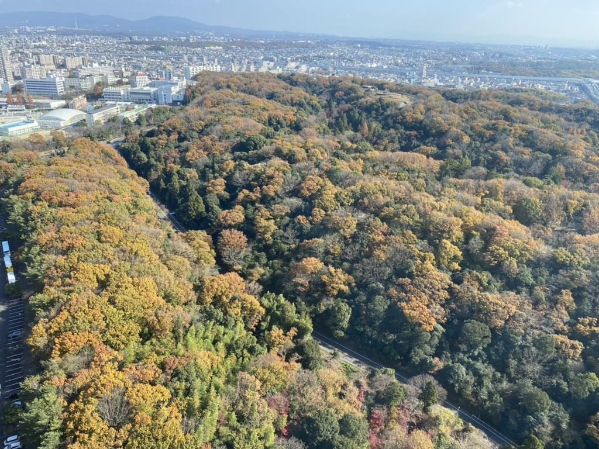
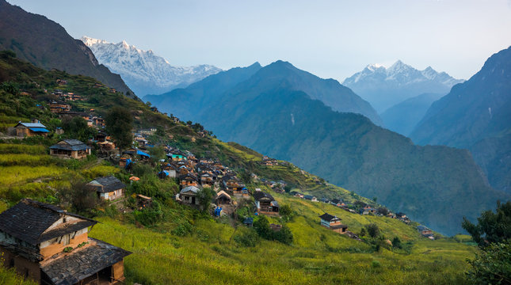
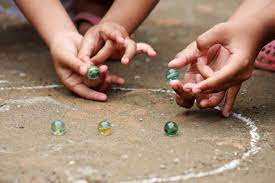
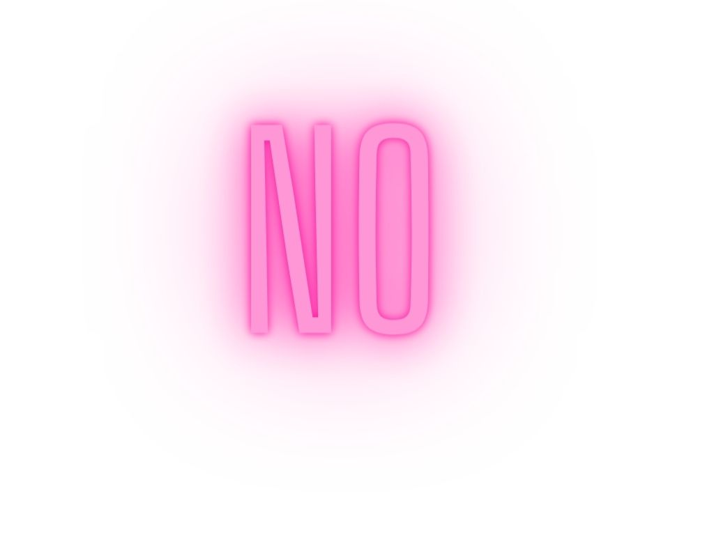
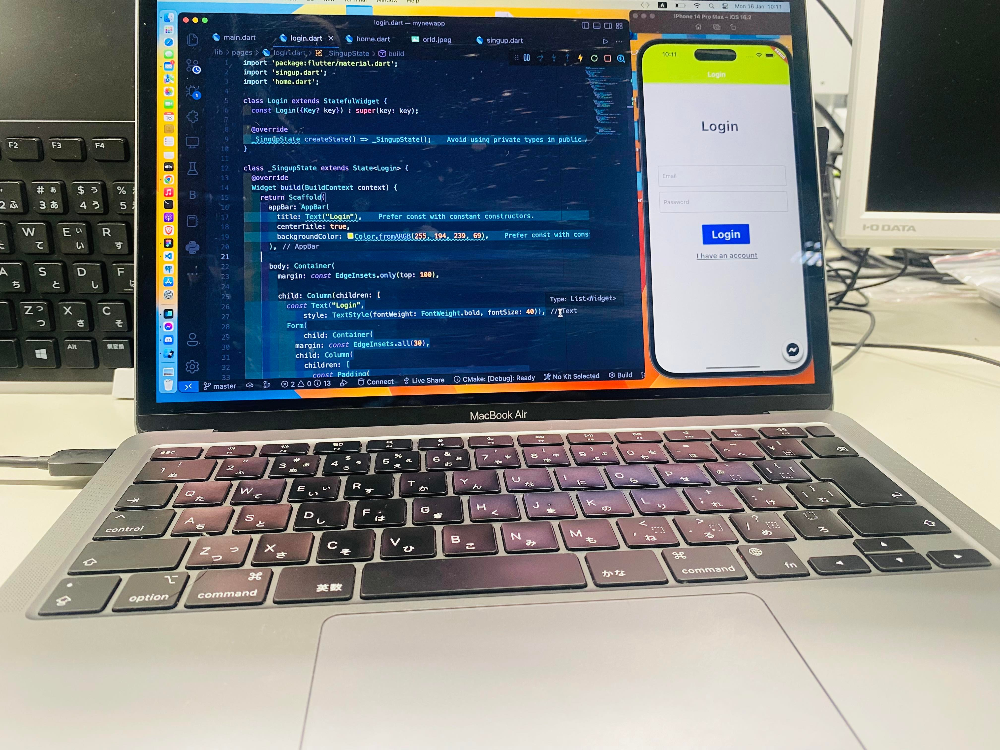
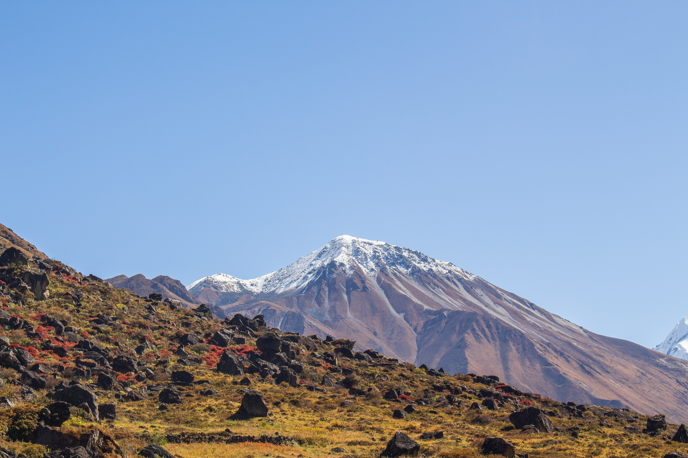

一番古い記録
 2001年にネパールの小さい村で生まれました。子供のゴルは学校行って家事に手伝っていました。それ以外記録に残ったことはあまりないです。
子供のゴロ好きになったこと
子ともにごろ好きになったことが特にないですが友達達と遊んだりするのは好きでした
中学生.高校生高校生の時好きになったこと
中学生.高校生高校生の時好きになったことはあまりないです
今好きなこと
 今好きになっていることは勉強です。勉強と言えば大学の勉強ではなくて自分が勉強したいことです。今はプログラミング言語 PYTHON, JAVASCPRIT を使って色々なアプリ開発したりしています。 なぜそれ好きになって色のかと言うと将来 WEB DEVELOPER MOBILE DEVELOPER の仕事をしたいそれに関する自分に会社を作る夢です。大学ではそれの勉強できないので 自分で勉強するしか他の方法がないからです.
ふるさとのこと
 ２０１９年にネパールを離れて日本に来ました。もし今も田舎にいたのなら何の価値もないの人間になってしまったかもしれないです。田舎を離れていいなと思っています。ずっと田舎が帰りたくないとは思わないです まだ田舎の思い出が残っています.